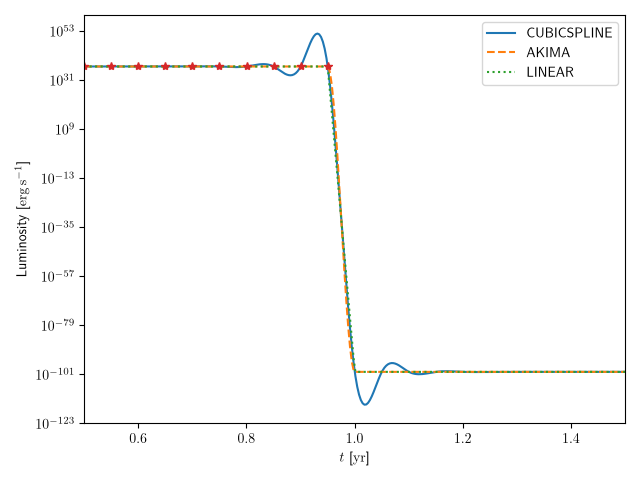

Potential Numerical Pitfalls
GAMERA will work well and produce accurate results in most scenarios, but, depending on what one wants to do, there can be some numerical subtleties. On this page, we summarise such potential pitfalls and how to deal with them. Please read this information in detail and take it into account when using GAMERA.
Discontinuities in lookups
GAMERA uses lookups in the numerical calculations, for example for the particle spectra or the time evolution of
the total injected luminosity or the magnetic field. The default interpolation algorithm is a cubic spline interpolation.
This produces very smooth interpolation curves, but it does not produce good approximations around discontinuities.
Therefore, in case you have sudden jumps, it is advisable to use a different interpolation method. The available options are
"CUBICSPLINE", "LINEAR", "AKIMA", and "POLYNOMIAL". In case of discontinuities, "AKIMA" or "LINEAR" will give
better approximations then the default option "CUBICSPLINE". In all classes, the interpolation method can be changed with
the function SetInterpolationMethod:
# For the Particles class
fp = gp.Particles()
fp.SetInterpolationMethod("LINEAR")
# For the Radiation class
fr = gp.Radiation()
fr.SetInterpolationMethod("AKIMA")
# For the Utils class
fu = gp.Utils()
fu.SetInterpolationMethod("AKIMA")
In the following example, the injection luminosity lookup in the Particles class was set to 10³⁷ erg/s
for times below 1 year, and to zero for later times. As can be seen in the image, the interpolation methods "AKIMA" and
"LINEAR" produce better approximations at the discontinuity, although all methods match all points of the original lookup
which are shown with red stars. Because the luminosity lookup works for the logarithmic values, the oscillations with the
"CUBICSPLINE" interpolator shortly before the discontinuity will produce order of magnitudes larger injection rates,
which will completely dominate the result.
